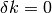
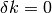

Correcting poor initial geometry¶
Introduction¶
One of the most common problems faced by users of any data processing program
is incorrect information about the experimental geometry in the input. This
will often cause outright failures in indexing, but sometimes more subtle
effects are possible, such as misindexing. In such cases, it may be possible
to index and refine a lattice that on the face of it looks reasonable but is
actually shifted so that  ,
,  or
or  (or some
combination of these) are off by some integer value (often +/- 1).
(or some
combination of these) are off by some integer value (often +/- 1).
DIALS uses the information written to the image headers to form its initial model for the experiment geometry. That is, we trust that the beamline has been set up correctly and the files produced at the beamline are a good description of the experiment that was performed. Using the dxtbx library within cctbx means we even recognise specific beamlines in many cases, and interpret the files according to custom format readers that are appropriate for those beamlines.
Unfortunately it is not always possible to be this trusting. Beamlines are often changing and sometimes the metadata recorded with your diffraction images are out of date. Sometimes values for things like the beam centre depend on other factors such as the wavelength and detector distance, and your experiment might have been performed outside the range that was used during beamline calibration. Another possibility is that the image headers are correct, but the wrong convention is used during interpretation of the headers. Not only are there 8 different ways that a detector’s ‘fast’ and ‘slow’ axes could be aligned with the vertical and horizontal directions of the detector’s housing, but processing packages have their own coordinate conventions that map these to ‘X’ and ‘Y’ directions, either in pixels or millimetres. It is not surprising that sometimes meaning gets lost in translation here. Whatever the cause, incorrect or wrongly interpreted image headers are a reality that we have to be aware of. Some programs go as far as to ignore the image headers entirely and pass the responsiblity on to the supposed existence of an accurate ‘site file’ describing the experimental set up. Although it may be easier for a user to edit an incorrect site file rather than broken image headers, the problem still remains that if the experiment description is sufficiently wrong, the processing will not be straightforward.
In this tutorial we describe some of the ways in which bad geometry derived from image headers can be worked around within DIALS, and we use an example in which the initially incorrect geometry tricks the indexing program into misindexing, which, if we were being careless, could have lead to the integration of a useless data set. This tutorial is a cautionary tale, the moral of which is that the user is still required to read the output of the programs they run!
Tutorial data¶
The following example uses a dataset kindly provided by Wolfram Tempel, which
was collected at beamline 19-ID at the APS. This dataset is available for
download from  .
.
The dataset consists of a tar archive of bz2-compressed images. Very recent versions of DIALS can read these directly, however here we shall be using DIALS 1.1, as included in CCP4 7.0. In that case, we need to uncompress the image files first. To do that, we first extract the archive:
tar xvf DPF3_247398.tar
then uncompress each of the 200 images. This will probably take a couple of minutes if the files are on a local hard drive:
bunzip2 *.bz2
Import¶
At this point we have no reason not to trust the image headers. We shall just go ahead and import the whole sweep as normal:
dials.import x247398/t1.0*.img
From the output we can see that beamline 19-ID at the APS is one that is specifically recognised by DIALS. As expected we found a single sweep of data. So all looks good so far.:
--------------------------------------------------------------------------------
DataBlock 0
format: <class 'dxtbx.format.FormatSMVADSCSNAPSID19.FormatSMVADSCSNAPSID19'>
num images: 200
num sweeps: 1
num stills: 0
--------------------------------------------------------------------------------
We can get some more information about the expected experiment details using dials.show:
dials.show datablock.json
which produces output including the experimental geometry:
Detector:
Panel:
pixel_size:{0.1024,0.1024}
image_size: {3072,3072}
trusted_range: {1,65535}
thickness: 0
material:
mu: 0
fast_axis: {1,0,0}
slow_axis: {0,-1,0}
origin: {-159.98,154.501,-150}
Max resolution: 1.355231
Beam:
wavelength: 1.28215
sample to source direction : {0,0,1}
divergence: 0
sigma divergence: 0
polarization normal: {0,1,0}
polarization fraction: 0.999
Beam centre: (159.98,154.50)
Scan:
image range: {1,200}
oscillation: {-100,1}
Goniometer:
Rotation axis: {-1,0,0}
Fixed rotation: {1,0,0,0,1,0,0,0,1}
Setting rotation:{1,0,0,0,1,0,0,0,1}
At the moment we don’t know that any of this is wrong. Happily, the
19-ID-specific format has recognised the ‘inverse  ‘ rotation of
the goniometer at this beamline, and thus produced a rotation axis of
‘ rotation of
the goniometer at this beamline, and thus produced a rotation axis of
{-1,0,0} rather than {1,0,0}. These inverse settings
can be the cause of problems with processing data from currently
unrecognised beamlines. As an aside, in such a case we could force the
rotation axis to be whatever we want like this:
dials.import x247398/t1.0*.img geometry.goniometer.rotation_axis=-1,0,0
We can fix any aspect of the experimental geometry in this way, as long as we
know in advance what it should be. This information could all be included in
a file, say site.phil and passed to dials.import thus
combining the freedom of a site file with the ability to read image headers.
However, in general we would prefer to produce a new format in such cases.
More information about this is available in the dxtbx
paper
Find Spots¶
Spot-finding in DIALS usually works well for Pilatus detectors, where default assumptions about Poisson statistics of pixel counts, unity gain and no point spread are accurate. These assumptions are not correct for CCD detectors and this can be another source of problems with data processing. This may be the subject of a future tutorial! In this case though, the defaults do a reasonable, though possibly non-optimal job. We continue on regardless, requesting only a larger number of processes to speed the job up:
dials.find_spots datablock.json nproc=4
After finding strong spots it is always worth viewing them using dials.reciprocal_lattice_viewer:
dials.reciprocal_lattice_viewer datablock.json strong.pickle

Presented with this view, we might already start to worry that something is
not quite right. Instead of neat columns of points corresponding to a
regular reciprocal lattice grid, the points are aligned in curved or even
spiral tracks. Extreme cases of this may indicate something grossly wrong,
like an inverted direction. In this instance the lattice is
still detectable, just distorted. We understand this as inaccurate mapping
from detector to reciprocal space. If the diffraction geometry model is
wrong, then dials.reciprocal_lattice_viewer can’t calculate the
reciprocal lattice position for each centroid properly. This can cause
problems with indexing because that requires exactly the same step of
mapping centroid positions from detector to reciprocal space.
Notwithstanding these concerns, we press on into indexing anyway.
Indexing¶
dials.index datablock.json strong.pickle
It turns out that the reciprocal lattice positions were regular enough for indexing to complete (‘succeed’ is the wrong word, as will become clear). Remember that initial indexing uses fairly low resolution data only. At low resolution the curved tracks of spots are straight enough to fit a lattice. Macrocycles of refinement then extend the solution out to increasingly high resolution. One might imagine this process as steps of unwarping the distorted lattice from the centre outwards until a regular grid is formed. Here’s some output from the end of the indexing log:
RMSDs by experiment:
---------------------------------------------
| Exp | Nref | RMSD_X | RMSD_Y | RMSD_Z |
| id | | (px) | (px) | (images) |
---------------------------------------------
| 0 | 20000 | 0.75141 | 1.458 | 0.41705 |
---------------------------------------------
Final refined crystal models:
model 1 (25903 reflections):
Crystal:
Unit cell: (112.716, 114.899, 122.710, 90.812, 90.347, 118.944)
Space group: P 1
The experienced user may also pause for thought here. Positional
RMSDs of 0.75 and 1.5 pixels are really rather bad. The keen-eyed user might
compare the number of indexed reflections: 25903 with the total number of
found spots in strong.pickle, which was reported at the end of the
dials.find_spots run: Saved 89810 reflections to strong.pickle.
Indexing less than one third of the centroids is also a cause for concern.
Looking at the results in dials.reciprocal_lattice_viewer is instructive again:
dials.reciprocal_lattice_viewer experiments.json indexed.pickle

Refinement has done what it could to produce a regular lattice, but it is still messy. We also see that the majority of the centroids remain unindexed, and these are messier still.

At this point we should definitely heed the warnings and try to figure out what happened and how to fix it. However, unfortunately the careless user could go ahead and integrate with this model. Let’s see what happens if we try to refine compatible Bravais lattices:
dials.refine_bravais_settings experiments.json indexed.pickle
-------------------------------------------------------------------------------------------------------------------
Solution Metric fit rmsd min/max cc #spots lattice unit_cell volume cb_op
-------------------------------------------------------------------------------------------------------------------
12 1.8848 0.593 0.034/0.037 24310 hP 113.31 113.31 121.65 90.00 90.00 120.00 1352671 a,b,c
11 1.8848 0.596 -0.037/0.048 24413 oC 113.68 196.41 121.92 90.00 90.00 90.00 2722112 -b,2*a+b,c
10 1.8848 0.531 0.042/0.042 23262 mC 115.88 199.28 124.38 90.00 89.14 90.00 2871998 -b,2*a+b,c
9 1.8590 0.517 0.048/0.048 23655 mC 199.69 115.46 124.28 90.00 90.77 90.00 2865004 2*a+b,b,c
8 1.6960 0.520 -0.037/0.060 24876 oC 112.42 191.42 119.53 90.00 90.00 90.00 2572210 a+b,-a+b,c
7 1.6960 0.518 0.040/0.040 25046 mC 191.13 112.31 119.35 90.00 90.21 90.00 2561782 a-b,a+b,c
6 1.2805 0.378 0.060/0.060 22834 mC 115.36 196.09 122.77 90.00 90.95 90.00 2776966 a+b,-a+b,c
5 1.1998 0.476 -0.037/0.106 24751 oC 110.36 195.43 119.64 90.00 90.00 90.00 2580248 a,a+2*b,c
4 1.1998 0.449 0.106/0.106 24735 mC 111.13 196.81 120.35 90.00 90.48 90.00 2632244 a,a+2*b,c
3 1.1732 0.445 -0.037/-0.037 24859 mP 109.73 118.84 111.23 90.00 119.07 90.00 1267874 -a,-c,-b
2 0.5467 0.222 -0.034/-0.034 21263 mC 201.88 113.14 123.52 90.00 91.34 90.00 2820480 a+2*b,-a,c
1 0.0000 0.169 -/- 20646 aP 112.59 114.79 122.65 90.84 90.35 118.95 1386685 a,b,c
-------------------------------------------------------------------------------------------------------------------
It turns out that quite a few lattices can be forced to fit the putative
indexing solution, but again there are warnings everywhere that imply none
of these are right. First look at the Metric fit column. This value is
the Le Page  value. For a correct indexing solution with a good dataset this should be a
small number, less than 0.1 say, such as in the
Processing in Detail tutorial. The
value. For a correct indexing solution with a good dataset this should be a
small number, less than 0.1 say, such as in the
Processing in Detail tutorial. The rmsd column reports an
overall positional RMSD. Again, small numbers are better. Typically we would
look for a solution below a jump to higher values of RMSD. Here they are all
pretty bad, at around an order of magnitude larger than what we’d expect
from good data. Another clear indication that none of the symmetry operations
implied by the higher symmetry lattices is correct is given by the min/max
cc column. This reports the lowest and highest correlation coefficients
between the rough spot-finding intensities of subsets of reflections related
by symmetry elements of the lattice. For a real solution without rather
extreme radiation damage or other scaling issues we would expect much larger
numbers than these, say >0.5 or so.
Check indexing symmetry¶
What can we do in a case like this? Certainly the best solution would be to
fix the datablock.json. The most common problem with the experimental
geometry is with the beam centre, so we might look to this first as the
culprit. If we can figure out a better beam centre in the
Mosflm convention
then we could use that to override the image headers on import:
dials.import x247398/t1.0*.img geometry.mosflm_beam_centre=XCEN,YCEN
where XCEN and YCEN are replaced by the beam coordinates in
millimetres using Mosflm’s convention.
What if we don’t have any information about the beam centre at all? Well, short
of just guessing values in dials.reciprocal_lattice_viewer to
improve the appearance of the lattice, we still have some tricks we can try.
First, we are lucky enough in this situation to have an indexing solution,
despite the fact it is a wrong one. The spots we indexed may indeed be real,
but perhaps the indices are shifted by some value. This would be equivalent to
the beam centre latching onto some very low resolution Bragg reflection rather
than the direct beam  . DIALS offers a tool to check this.
If we run:
. DIALS offers a tool to check this.
If we run:
dials.check_indexing_symmetry experiments.json indexed.pickle grid=1
then all combinations of off-by-one offsets in , and
will be checked by testing correlation coefficients between sets of reflections
related by symmetry. Here the model crystal symmetry is  , so we are
testing only the Friedel pairs. The results are printed as a table in the
output:
, so we are
testing only the Friedel pairs. The results are printed as a table in the
output:
Checking HKL origin:
dH dK dL Nref CC
-1 -1 -1 5638 0.357
-1 -1 0 5634 0.352
-1 -1 1 5656 0.345
-1 0 -1 5432 0.338
-1 0 0 5488 0.322
-1 0 1 5554 0.358
-1 1 -1 5209 0.328
-1 1 0 5301 0.358
-1 1 1 5333 0.360
0 0 0 66463 -0.045
1 -1 -1 5632 0.394
1 -1 0 5952 0.445
1 -1 1 6086 0.442
1 0 -1 5542 0.382
1 0 0 5988 0.470
1 0 1 7392 0.941
1 1 -1 5112 0.320
1 1 0 5374 0.359
1 1 1 5554 0.394
Check symmetry operations on 89810 reflections:
Symop Nref CC
x,y,z 89810 0.529
In this case there is a much greater correlation coefficient for the shift
 ,  and
,  and  than for all
others. In fact with 94% correlation even in the unscaled, rough found spots
intensity values we can be very sure we have found the right solution.
than for all
others. In fact with 94% correlation even in the unscaled, rough found spots
intensity values we can be very sure we have found the right solution.
Applying the hkl offset¶
We can apply that correction using dials.reindex, and then refine the result:
dials.reindex indexed.pickle hkl_offset=1,0,1
dials.refine experiments.json reindexed_reflections.pickle
Checking the table at the end of the log file, this seems to be even worse!
--------------------------------------------
| Exp | Nref | RMSD_X | RMSD_Y | RMSD_Z |
| id | | (px) | (px) | (images) |
--------------------------------------------
| 0 | 15810 | 1.0097 | 1.6246 | 0.51472 |
--------------------------------------------
However, the tables earlier in the log provide a clue as to why:
Summary statistics for 25662 observations matched to predictions:
------------------------------------------------------------------
| | Min | Q1 | Med | Q3 | Max |
------------------------------------------------------------------
| Xc - Xo (mm) | -8.18 | -2.583 | -2.434 | -2.338 | -1.75 |
| Yc - Yo (mm) | -8.63 | 0.4125 | 1.097 | 1.274 | 9.171 |
| Phic - Phio (deg) | -20.02 | -0.5833 | 0.2352 | 1.001 | 22.87 |
| X weights | 1117 | 1141 | 1142 | 1143 | 1144 |
| Y weights | 1112 | 1140 | 1142 | 1143 | 1144 |
| Phi weights | 11.38 | 12 | 12 | 12 | 12 |
------------------------------------------------------------------
9852 reflections have been flagged as outliers
Summary statistics for 15810 observations matched to predictions:
-------------------------------------------------------------------
| | Min | Q1 | Med | Q3 | Max |
-------------------------------------------------------------------
| Xc - Xo (mm) | -2.942 | -2.523 | -2.418 | -2.337 | -1.902 |
| Yc - Yo (mm) | 0.5957 | 1.099 | 1.224 | 1.315 | 1.785 |
| Phic - Phio (deg) | -3.031 | -0.4447 | 0.1153 | 0.6547 | 3.326 |
| X weights | 1122 | 1141 | 1143 | 1144 | 1144 |
| Y weights | 1117 | 1141 | 1142 | 1143 | 1144 |
| Phi weights | 11.88 | 12 | 12 | 12 | 12 |
-------------------------------------------------------------------
The initial model is so bad that outlier rejection cannot cope. Even after rejection, reflections with residuals as high as 3 mm or 3 degrees remain. It is likely that some real outliers remain in the working set. However the results of dials.check_indexing_symmetry do give us confidence that many of the reflections are correctly indexed, so we believe there is a correct core subset of the reflections. If refinement is being confused by the presence of outliers, then we can try tightening up the outlier rejection so that it is extremely intolerant:
dials.refine experiments.json reindexed_reflections.pickle mcd.threshold_probability=0.2
The default outlier detection algorithm in dials.refine is called
mcd. Normally, mcd.threshold_probability=0.975, which means that with
ideal normally-distributed centroid residuals we should expect to reject 2.5%
of the data. Here we are requesting that with ideal data, 80% of it should
be thrown away and we refine only using the core, smallest residuals. The
summary tables show the effect of outlier rejection:
Summary statistics for 25662 observations matched to predictions:
------------------------------------------------------------------
| | Min | Q1 | Med | Q3 | Max |
------------------------------------------------------------------
| Xc - Xo (mm) | -8.18 | -2.583 | -2.434 | -2.338 | -1.75 |
| Yc - Yo (mm) | -8.63 | 0.4125 | 1.097 | 1.274 | 9.171 |
| Phic - Phio (deg) | -20.02 | -0.5833 | 0.2352 | 1.001 | 22.87 |
| X weights | 1117 | 1141 | 1142 | 1143 | 1144 |
| Y weights | 1112 | 1140 | 1142 | 1143 | 1144 |
| Phi weights | 11.38 | 12 | 12 | 12 | 12 |
------------------------------------------------------------------
18730 reflections have been flagged as outliers
Summary statistics for 6932 observations matched to predictions:
---------------------------------------------------------------------
| | Min | Q1 | Med | Q3 | Max |
---------------------------------------------------------------------
| Xc - Xo (mm) | -2.592 | -2.441 | -2.387 | -2.332 | -2.239 |
| Yc - Yo (mm) | 1.02 | 1.201 | 1.252 | 1.309 | 1.433 |
| Phic - Phio (deg) | -0.9988 | -0.2513 | 0.08528 | 0.4251 | 1.21 |
| X weights | 1124 | 1142 | 1143 | 1144 | 1144 |
| Y weights | 1127 | 1142 | 1143 | 1144 | 1144 |
| Phi weights | 11.9 | 12 | 12 | 12 | 12 |
---------------------------------------------------------------------
Outlier rejection has removed a large part of the scatter around the median. The median values are not much changed by outlier rejection, which is what we expect as it is performed in an unbiased way. The large deviation of the median values from zero are indicative of the large shift implied by the misindexing. Refinement continues on to correct the model using the core of about 7000 best-matched reflections:
Refinement steps:
------------------------------------------------
| Step | Nref | RMSD_X | RMSD_Y | RMSD_Phi |
| | | (mm) | (mm) | (deg) |
------------------------------------------------
| 0 | 6932 | 2.3905 | 1.2535 | 0.46787 |
| 1 | 6932 | 0.077469 | 0.079508 | 0.41841 |
| 2 | 6932 | 0.067829 | 0.076808 | 0.4016 |
| 3 | 6932 | 0.066999 | 0.07525 | 0.38685 |
| 4 | 6932 | 0.064802 | 0.072023 | 0.3614 |
| 5 | 6932 | 0.059714 | 0.065338 | 0.32359 |
| 6 | 6932 | 0.051521 | 0.054877 | 0.2707 |
| 7 | 6932 | 0.045618 | 0.047833 | 0.22112 |
| 8 | 6932 | 0.044251 | 0.046662 | 0.19914 |
| 9 | 6932 | 0.043968 | 0.046553 | 0.19386 |
| 10 | 6932 | 0.043936 | 0.046514 | 0.1933 |
| 11 | 6932 | 0.043939 | 0.046508 | 0.19331 |
| 12 | 6932 | 0.043939 | 0.046508 | 0.19331 |
------------------------------------------------
RMSD no longer decreasing
RMSDs by experiment:
---------------------------------------------
| Exp | Nref | RMSD_X | RMSD_Y | RMSD_Z |
| id | | (px) | (px) | (images) |
---------------------------------------------
| 0 | 6932 | 0.42909 | 0.45418 | 0.19331 |
---------------------------------------------
The final result is not too bad. Let’s do a second macrocycle of refinement, giving the outlier rejection a second chance starting from the improved model:
dials.refine refined_experiments.json refined.pickle
RMSDs by experiment:
----------------------------------------------
| Exp | Nref | RMSD_X | RMSD_Y | RMSD_Z |
| id | | (px) | (px) | (images) |
----------------------------------------------
| 0 | 14760 | 0.53932 | 0.60676 | 0.22887 |
----------------------------------------------
Now we see many more reflections survived outlier rejection, and the RMSDs remain passably okay. Remember though that this model was ultimately derived from an indexing job in which fewer than one third of the found spots were indexed, using bad geometry. Some areas of reciprocal space are poorly sampled with indexed reflections, which means we won’t be doing the best job in refinement, especially if fitting a scan-varying crystal model. Furthermore, we won’t have the best reference profiles for spots in these regions during integration.
Bootstrap indexing¶
What we would like to do is take the refined geometry as a better starting point for indexing. We do that like this:
dials.import input.datablock=datablock.json output.datablock=recycled.json reference_geometry=refined_experiments.json
dials.index recycled.json strong.pickle output.experiments=corrected_experiments.json output.reflections=corrected_indexed.pickle
This looks much better:
RMSDs by experiment:
----------------------------------------------
| Exp | Nref | RMSD_X | RMSD_Y | RMSD_Z |
| id | | (px) | (px) | (images) |
----------------------------------------------
| 0 | 20000 | 0.59591 | 0.65089 | 0.2226 |
----------------------------------------------
Final refined crystal models:
model 1 (72275 reflections):
Crystal:
Unit cell: (56.370, 99.824, 121.482, 90.025, 89.958, 89.996)
Space group: P 1
Many more reflections were indexed this time, while the RMSDs remain acceptable. Inspecting the result with dials.reciprocal_lattice_viewer:
dials.reciprocal_lattice_viewer corrected_experiments.json corrected_indexed.pickle

We have succeeded in indexing the major lattice, however there are hints of at
least one other minor lattice within the unindexed reflections, which we could
either choose to ignore or attempt to index by using the max_lattices
parameter of dials.index.
We leave it here as an exercise for the reader to go on and process this dataset, but before finishing with the tutorial, we should introduce the preferred approach to dealing with bad geometry.
Discover better experimental model¶
Having now gone through the instructive process of rescuing a wrong indexing solution, it is time to reveal a simpler, more general solution that existed all along, namely the program dials.discover_better_experimental_model. This is a more general solution because this may work even if indexing from the initial geometry failed outright so that we had nothing to bootstrap from. It performs a grid search to improve the direct beam position using the methods also implemented in LABELIT.
This sits in between the spot finding and the indexing operations, so that we could have done:
dials.discover_better_experimental_model strong.pickle datablock.json
The output is very concise, yet informative:
Running DPS
Found 6 solutions with max unit cell 167.55 Angstroms.
Old beam centre: 159.98 mm, 154.50 mm
New beam centre: 162.30 mm, 153.44 mm
Shift: -2.32 mm, 1.06 mm
We should not be surprised to see the size of the beam centre shifts being about the same as the median residuals after we reindexed the reflections before. This time, with the shift applied before any indexing took place we get the right result straight away:
dials.index optimized_datablock.json strong.pickle corrected_experiments2.json output.reflections=corrected_indexed2.pickle
RMSDs by experiment:
----------------------------------------------
| Exp | Nref | RMSD_X | RMSD_Y | RMSD_Z |
| id | | (px) | (px) | (images) |
----------------------------------------------
| 0 | 20000 | 0.55848 | 0.62759 | 0.21564 |
----------------------------------------------
Final refined crystal models:
model 1 (72441 reflections):
Crystal:
Unit cell: (56.339, 99.748, 121.412, 89.980, 89.966, 89.993)
Space group: P 1
Conclusions¶
- Incorrect or wrongly-interpreted image headers are a fact of life. You will encounter these.
- dials.reciprocal_lattice_viewer is an excellent troubleshooting tool for all sorts of spot finding and indexing problems.
- Some issues manifest as outright failures in indexing, others are more insidious and may result in a misindexed solution.
- Look out for CCs to detect misindexed data, and remember dials.check_indexing_symmetry.
- Bootstrap indexing might be possible, but is not really recommended. It makes for a nice tutorial though!
- When beam centre problems are suspected, try dials.discover_better_experimental_model.
Acknowledgements¶
Thanks to Wolfram Tempel for making this dataset available and inspiring the writing of this tutorial.